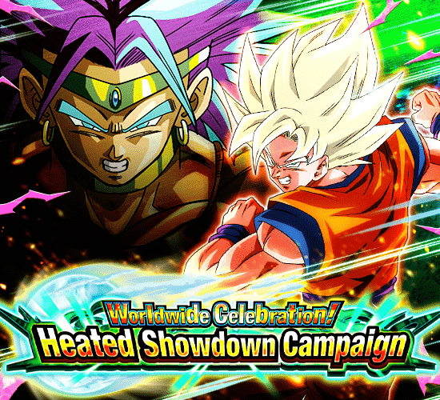

Simplesmente humilhando a celebração do ano passado.
Essa celebração teve um início bem mais promissor, tema interessante (eu queria muito q tivesse sido GT) e em geral, só funciona mil vezes melhor doq a anterior.
^ Sumário (clique para ir a qualquer um dos tópicos)
A MAIS PURA PEDRADA.
Mais uma celebração de downloads só pode significar mais uma música temática
Essa aqui ficou muito boa cara, é perfeita pro Broly
Uma coisa é que a produção da música parece um pouco mais séria, acho que eles realmente tão investindo nessa parada, já que os raps do Cooler pareciam ser algo bem mais meme
Ou não né, vai saber..
O TRIO SSJ SÓ QUE PHY
Imagine o Vegeta TEQ do Dia dos Saiyajins, mas com 50.000x mais poder
Bom, esses caras são líder pra Super Saiyans.. DE NOVO
Em menos de 1 ano tivemos 3 cards diferentes que lideram Super Saiyans.. bizarro
A passiva deles é baseada em Ki, já que a cada 3 de Ki, eles ganham 30% de DEF, chegando a 240% se estiverem com 24 de Ki
Além disso, se tiverem pelo menos 18 de Ki, tem mais ATK e lançam 2 adicionais que tem 50% de chance de serem supers
E fique tranquilo com o Ki, pq eles mudam orbs aleatoriamente pra PHY todo turno e ganham Ki em dobro por orb pega, então tá safe
Sobre o suporte deles.. nada demais, só dão 50% de ATK pra todos aliados sem restrição e caso tenha um aliado Movie Heroes ou All-Out Struggle, eles dão 77 de DEF por 2 turnos pra todo mundo
É isso, turno 1 eles fazem mais doq os Gammas LR pós-standby. Ter dois desse card no time significa ter 154% de DEF a mais pq sim, eles simplesmente revivem um monte de cards que estavam começando a envelhecer
O único problema deles é que eles tem 30% de redução de dano.. mas só contra supers? Pq fizeram isso? Não que faça muita diferença de qualquer jeito...
Por sinal, esses caras foram abençoados com OSTs incríveis e uma animação que na minha opinião é a melhor do jogo inteiro no momento
Os ângulos simplesmente maravilhosos, belíssimo trabalho slk
Que tal falar da condição de standby deles? Já que nesse ano o Dokkan aprendeu com os erros e fez as condições mais estupidamente fáceis pros LRs
A partir do turno 5 da luta ou com menos de 77% de HP, fique a vontade
Mais uma standby tank que desmantela o boss, brabo
Esse Goku é bem simples na real, já que ele mantem as mecânicas de Ki que ele já tinha na base
Então pegando 24 de Ki eles ainda tem um monte de defesa, sendo a diferença ele também ganhar 59% de redução de dano, e ele tem defesa ativa, então você vira uma parede
O suporte deles é alterado pra 7% de DEF pra todos aliados por orb PHY pega por 2 turnos, o que pode ser melhor q o suporte normal se vc pegar um monte de orb né
Em geral, é só isso, já que ele não ataca nem nada
Cada ataque recebido carrega a standby em 3, enquanto cada orb PHY pego carrega em 2, e qualquer outro orb pego carrega 1
Com 41 cargas ou mais, você usa o socão muito brabo que dá um dano absurdo
E é isso, um card muito focado na defesa e suporte, mas que pode virar uma bomba nuclear dependendo de quanto vc carregar a standby
Lembrando que essa standby só dura 3 turnos, então você não pode colocar o Goku no slot 3, se não vc perde a standby 💀
Enfim, o card humilha completamente os Blue Boys AGL de todo jeito, eles cozinharam corretamente dessa vez.
Piccolo / Vegeta
Tá aí um caso engraçado: O personagem secundário do banner ser da mesma cor que o card principal.
Esse cara é um suporte desvia-ou-morre interessante
A partir do turno q eles aparecerem, eles dão scouter por 2 turnos e tem 60% de chance de desvio por 4 turnos
Eles dão 30% de ATK e DEF pra Super Class inteira, e mais 30% pra All-Out Struggle e Movie Heroes
Ele também cura 30% de HP no final do turno.. é algo
Bom, a partir do turno 5 ele vai automaticamente trocar pro Vegeta, então é, no máximo você vê esse cara por 2 turnos e ele já troca, pelo menos não corre tanto perigo com o desvio
Pq esse cara tem animações melhores que a celebração de downloads passada inteira?
O Vegeta não só é uma bomba nuclear por si só, mas ele também faz o Trio SSJ virar uma bomba mais desbalanceada ainda
Assim que você trocar pro Vegeta, ele ganha +300% de ATK, dá crítico garantido e muda orbs AGL, TEQ e STR pra PHY somente por um turno, já sabe oq significa né?
Se a partir do turno 5 você pode usar a standby do Trio SSJ, e esse cara aparece no turno 5.. o dano vai ser insano.
Tirando esse buff absurdo nesse primeiro turno, o Vegeta tem 50% de redução de dano incondicional e lança um adicional com 50% de chance de ser um Super Attack sempre
O kit dele se resume a só isso, mas acompanhado de uma animação de Super Attack linda demais, os caras cozinharam muito aqui
Bom personagem, bom suporte, só tem que tomar cuidado depois desse 1 turno insano pq 50% de redução de dano não anda sendo suficiente ultimamente..
BROLY TEQ CARNIVAL
O Dokkan realmente disse "Sentimos muito pelas condições podres que tiveram ano passado, aqui está uma Active instantânea!".
Só pra constar, QUE ARTE LINDA MANO, slk, muito bom
O Broly lidera 200% pra Movie Bosses, o que é meio questionável, mas talvez seja o motivo de pq o Cell Max veio logo pro Global
Ele é um personagem bem diferenciado, já que ele não pode atacar na forma base
Ao invés de atacar, ele é literalmente uma parede, já que ele tem defesa ativa e dá 60% de ATK e DEF pra Extreme Class, e se estiver no slot 1, tem 90% de redução de dano
Se estiver nos slots 2 ou 3, a redução cai pra 70%, mas ele dá 50% de chance de crítico pra Extreme Class, então eu diria que é uma troca justa
Enfim, a Active Skill do Broly fica disponível imediatamente, então você pode escolher transformar ele logo de cara ou transformar no turno seguinte
Só pra constar, o Broly perde toda essa redução de dano depois do primeiro turno, então é recomendável que você não fique esperando pra transformar ele
Não vai ter jeito, vou ter que matar o Paragus.
O Broly transformado é uma máquina de dano e defesa
Por 3 turnos ele tem 76% de redução de dano, que depois cai pra 50%, além de ganhar +200% de DEF e ter defesa ativa caso esteja no slot 1
Se ele receber um ataque, ele lança um adicional com 50% de chance de ser Super, e se estiver nos slots 2 ou 3, lança um Super adicional garantido
Não satisfeito, esse cara builda 5 de Ki e 50% de chance de crítico com 5 ataques, e ele ainda STACKA 50% de ATK no Ultra Super Attack, insano
Ele tem um buff meio meh contra apenas Pure Saiyans ou Earth-Bred Fighters, que é mais Ki e 50% de chance de crítico (totalizando 100% se a passiva dele tiver buildada)
Além disso, se estiver com 24 de Ki, ele quebra 1 ação do inimigo todo turno O Ultra Super Attack dele é em área.
Pra finalizar, a partir do turno seguinte após se transformar, o Broly pode matar o Paragus e ganhar 26% de ATK e DEF multiplicativos em cima de tudo que ele já tem, é MUITO absurdo
Em geral, personagem extremamente quebrado, invencível no primeiro turno, e depois uma máquina de dano enquanto consegue tankar muito bem
Não tá no nível do Beast, mas super próximo
Por sinal, esse cara linkado com o Broly LR do aniversário é uma rotação estúpida de quebrada..
Paragus F2P
Aparentemente esse cara não vai ganhar EZA nessa celebração, por isso ele tá aqui.
Bom, esse Paragus é um card meio.. contraditório?
Vamo lá, ele é um suporte de 25% de ATK, DEF e chance de crítico pra Pure Saiyans, até aí tudo bem
Mas caso tenha um Broly no time, ele dá outros 25% de ATK e DEF pra ele
O Paragus também ganha 50% de chance de desvio que aumenta pra 70% se ele estiver no slot 3.. só que.. a partir do turno 6?
E pra piorar mais, o novo Broly lidera Movie Bosses.. e o Paragus não tá em Movie Bosses
Tipo, querem que você exclusivamente use ele em Pure Saiyans? Meio bizarro
Eu acho esse cara interessante mas esse desvio zuado é realmente problemático, quem sabe no futuro eles não mudam isso com o EZA dele
Você chegou ao fim dessa página!
Bom.. por enquanto né, a celebração tá acontecendo agora e tals..
Obrigado por ler tudo, e fica a vontade pra ver outras
 & Super Saiyan Trunks (Teen)")